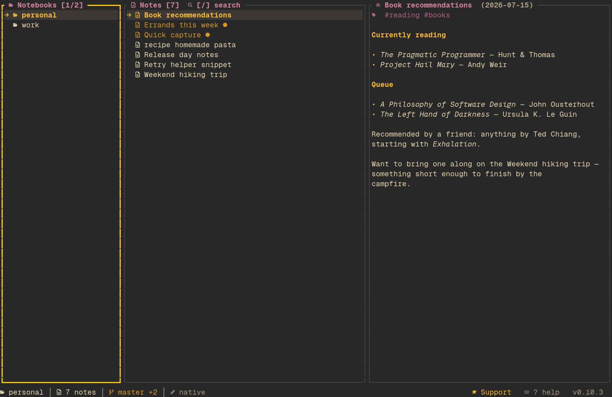

cargo audit job had started failing). Bumped the patched, semver-compatible crates — pulldown-cmark 0.13.5 (exponential event growth with wikilinks enabled), quinn-proto 0.11.19, rustls 0.23.46, rustls-webpki 0.103.16, webpki-roots/webpki-root-certs 1.0.11, libz-sys 1.1.31, tokio 1.54.1 — and moved the direct zip dependency (Notion import) from 8 to 9. Advisories only upstream can fix (transitive zip <9 via self_update, crypto-bigint via age) are allowlisted in .cargo/audit.toml with the condition for removing each entry.